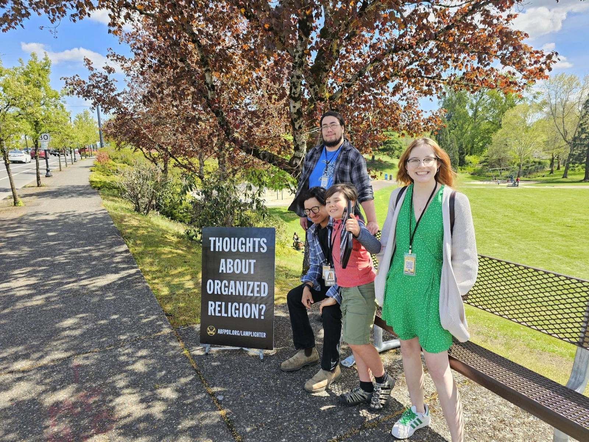

An ABF community resource
Project
Lamplighter.
Project Lamplighter is an external resource of ABF that helps us to learn about social metrics. It uses a simple mechanism of social surveys to gather data on the church and society. This information is channeled into our resources to help us gauge how we can better address the major problem of deconstruction in the church.

Listen · Learn · Respond
Real conversations help us teach wisely, serve locally, and pray specifically.